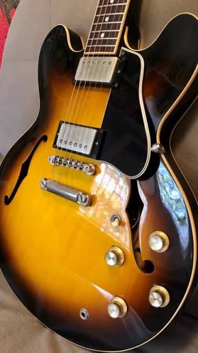
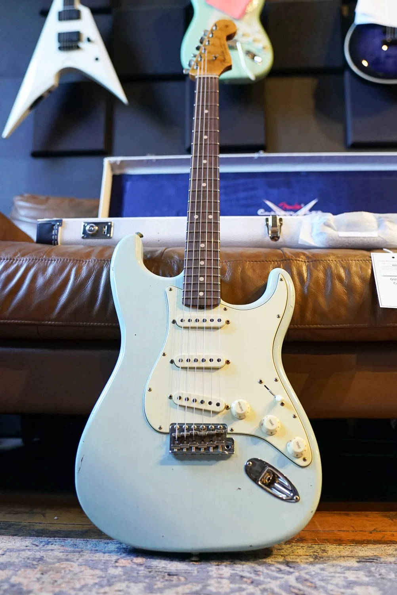
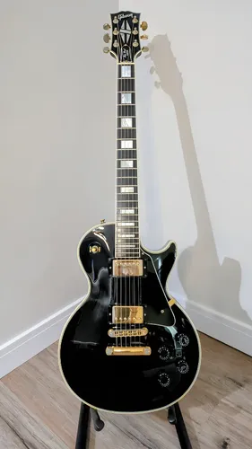

Semi-acústica
Essa é uma guitarra muito eclética, em que posso usá-la com um timbre mais clean, e se encaixa perfeitamente em um blues.

Strato Fender
Essa é um sonho de consumo, uma strato fender!! Perfeita pra performance em worship, rock, com um timbre elegante.

Gibson Les Paul
Rock!! Essa tem um timbre clássico, pesado e grave!! Amor, somente a essa guitarra!!